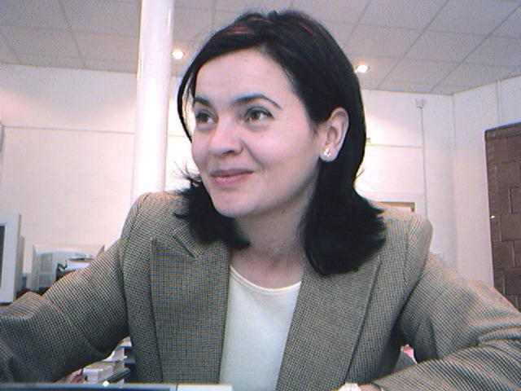

About Us
This website has been created to help everyone to access the online calculators and converters such as:
- kWh calculator
- kVA to kW converter
- Binary to octal, decimal, hexadecimal converters
- Octal to binary, decimal, hexadecimal converters
- Decimal to binary, octal, hexadecimal converters
- Length converter
- Temperature converter
- Voltage converter
- Resistance converter
- Electrostatic capacitance converter
Website developer: BIRASA Raymond, the student at Technical University of Cluj-Napoca, Faculty of Electrical Engineering, Master's in
Monitoring and Control Systems in Electrical Engineering (SMCIE )
This website is a project acomplished after learning the programming languages:
- HTML,
- CSS,
- PHP,
and - JavaScript.
The languages specified were used to develop this website during the first semester 0f academic year 2021-2022.
This project was carried out in
PIGMC discipline, a course taught by
Conf. dr. ing. Laura Grindei.

This website has been created under the supervision and guidance of Conf. dr. ing. Laura Grindei who teaches the programming languages for web development at the Faculty of Electrical Engineering, UTCN , in Romania.